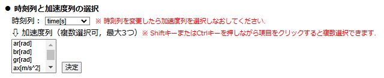
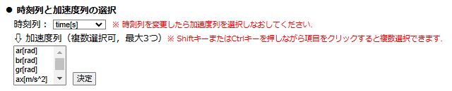
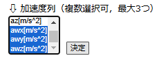
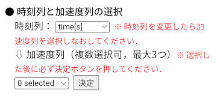
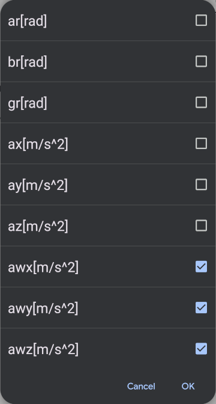
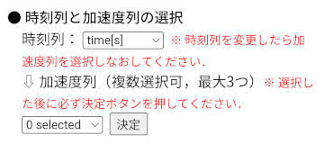
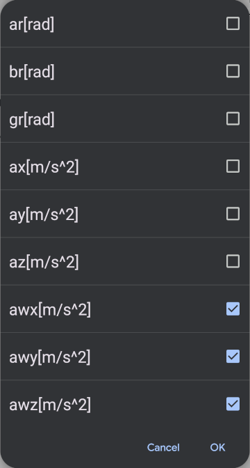
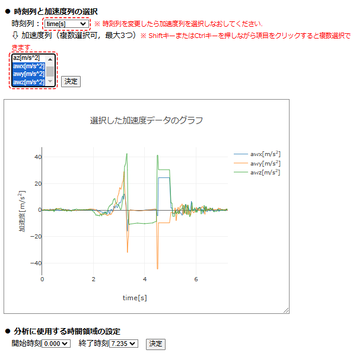

【操作方法】
■ 時刻列と加速度列の選択
CSVファイルを読み込んだ後，テーブルに表示された読込データから時刻列と加速度列を選択する．最初，時刻列としてCSVデータの一番左の列が選択されているが，他の列が時刻データとなっている場合は選択欄から適宜選択しなおす．時刻列を選択後，加速度列の選択欄には時刻列以外のデータ列のラベルが表示されるので，その中から加速度列を選択し，「決定」ボタンを押す．加速度列を選択後に時刻列を変更した場合，改めて加速度列を選択しなおす必要がある．
本解析アプリをPCで開いた場合



加速度列は最大3つまで複数選択可能であり，PCで本アプリを開いている場合，Shiftキーを押しながら項目をクリックすることで複数選択できる．
本解析アプリをモバイル端末で開いた場合




スマートフォンやタブレットなどのモバイル端末で本アプリを開いている場合，セレクタ（0 selected と表示された欄）を押すと，データ項目のチェックリストが表示され，複数の加速度列の項目にチェックを入れると複数選択できる（３つまで）．「OK」を押して戻った後は，必ず「決定」ボタンを押す必要がある．
時刻列と加速度列を選択して「決定」ボタンを押すと，下図のように横軸を時刻とした加速度のグラフが表示される．

分析に使用する時間領域の設定に進む．